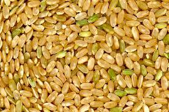

Arroz yamani
- Colocar el arroz yamani en un bol y cubrir con agua y lavar hasta que se elimine la suciedad. Luego escurrir.
- Llevar el arroz dentro del colador a la canilla y dejar correr el agua por un ratito mientras se remueve un poco
- Poner el arroz en una olla y agregar las dos tazas y media de agua y la sal. Antes de llevar al fuego, verificar que el arroz esté parejo. Es importante que el nivel de arroz sea uniforme ya que luego no se va a volver a tocar y de otra manera se puede cocinar de forma despareja.
- Tapar la olla y llevar a fuego fuerte hasta que hierva. Una vez que el agua rompa hervor bajar a mínimo y cocinar por aproximadamente 50 minutos. O hasta que el arroz esté tierno.
- Cuando esté retirar del fuego y dejar tapado por 10 minutos más y servir o utilizar en una receta. Que lo disfruten!